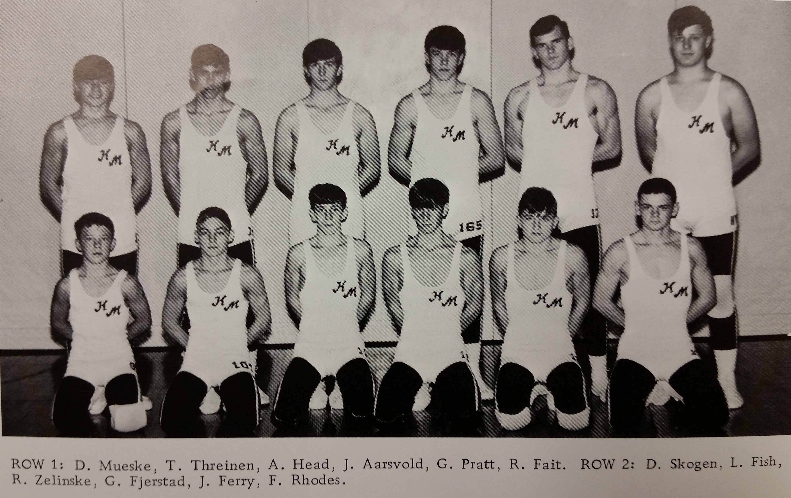

Season
1966-67
10-3Dual record
55Wrestlers
Jack LewisonHead coach

Roster
| Wt | Wrestler | Grade | Record | State |
|---|---|---|---|---|
| Nov. | 22nd Lake City | W | 25-21 | |
| Dec. | 2nd Zumbrota | W | 36-11 | |
| Dec. | 9th Plainview | W | 30-18 | |
| Dec. | 10th Dodge Center | W | 30-15 | |
| Dec. | 16th Kenyon | W | 35-13 | |
| Jan. | 6th Cannon Falls | L | 23-19 | |
| Jan. | 13th St. Charles | W | 22-21 | |
| Jan. | 20th Lake City | L | 25-14 | |
| Jan. | 31st Stewartville | L | 38-8 | |
| Jan. | 27th Zumbrota | W | 37-12 | |
| Feb. | 3rd Plainview | W | 31-18 | |
| Feb. | 10th Kenyon | W | 30-16 | |
| Feb. | 14th Hayfield | W | 22-19 | |
| 95# | Tony Andruzzu | 0-3 | ||
| 95# | Duane Mueske | 9th | 0-8 | |
| 103# | Tom Threinen | 8th | 5-3 | |
| 112# | Alan Head | 10th | 16-4 | |
| 120# | Joe Aarsvold | 12th | 15-2 | |
| 120# | Dale Schmoll | 10th | 1-0 | |
| 127# | Gordy Pratt | 11th | 8-3 | |
| 127# | Dick Fait | 11th | 7-5 | |
| 133# | Dave Skogen | 12th | 12-4 | |
| 138# | Greg Zelinske | 10th | 1-1 | |
| 145# | Lee Fish | 10th | 8-7 | |
| 154# | Rory Zelinske | 5-7 | ||
| 165# | Jack Ferry | 12th | 18-4 | |
| 175# | Gene Fjerstad | 5-4 | ||
| Hwt. | Fred Rhodes | 11th | 1-13 | |
| 95# | Tony Andruzzu | 0-3 | ||
| 95# | Duane Mueske | 9th | 0-8 | |
| 103# | Tom Threinen | 8th | 5-3 | |
| 112# | Alan Head | 10th | 10-2 | |
| 120# | Joe Aarsvold | 12th | 11-1 | |
| 120# | Dale Schmoll | 10th | 1-0 | |
| 127# | Gordy Pratt | 11th | 8-3 | |
| 133# | Dick Fait | 11th | 7-4 | |
| 138# | Dave Skogen | 12th | 10-2 | |
| 145# | Lee Fish | 10th | 7-5 | |
| 154# | Rory Zelinske | 5-6 | ||
| 165# | Gene Fjerstad | 5-4 | ||
| 175# | Jack Ferry | 12th | 12-1 | |
| Hwt. | Fred Rhodes | 11th | 1-12 | |
| 112# | Alan Head | 10th | 4-0 | |
| 175# | Jack Ferry | 12th | 3-1 | |
| 95# | Steve Hairsine | 8th | 0-1 | |
| 112# | Alan Head | 10th | 2-2 | |
| 120# | Joe Aarsvold | 12th | 4-1 | |
| 127# | Dick Fait | 11th | 0-1 | |
| 133# | Dave Skogen | 12th | 2-2 | |
| 138# | Greg Zelinske | 10th | 1-1 | |
| 145# | Lee Fish | 10th | 1-2 | |
| 154# | Rory Zelinske | 0-1 | ||
| 165# | Jack Ferry | 12th | 3-1 | |
| Hwt. | Fred Rhodes | 11th | 0-1 | |
| 165# | Jack Ferry | 12th | 0-1 |
Team Results
10-3 · Click to expand
- Nov. 22ndLake CityW25-21
- Dec. 2ndZumbrotaW36-11
- Dec. 9thPlainviewW30-18
- Dec. 10thDodge CenterW30-15
- Dec. 16thKenyonW35-13
- Jan. 6thCannon FallsL23-19
- Jan. 13thSt. CharlesW22-21
- Jan. 20thLake CityL25-14
- Jan. 31stStewartvilleL38-8
- Jan. 27thZumbrotaW37-12
- Feb. 3rdPlainviewW31-18
- Feb. 10thKenyonW30-16
- Feb. 14thHayfieldW22-19
Head coachJack Lewison